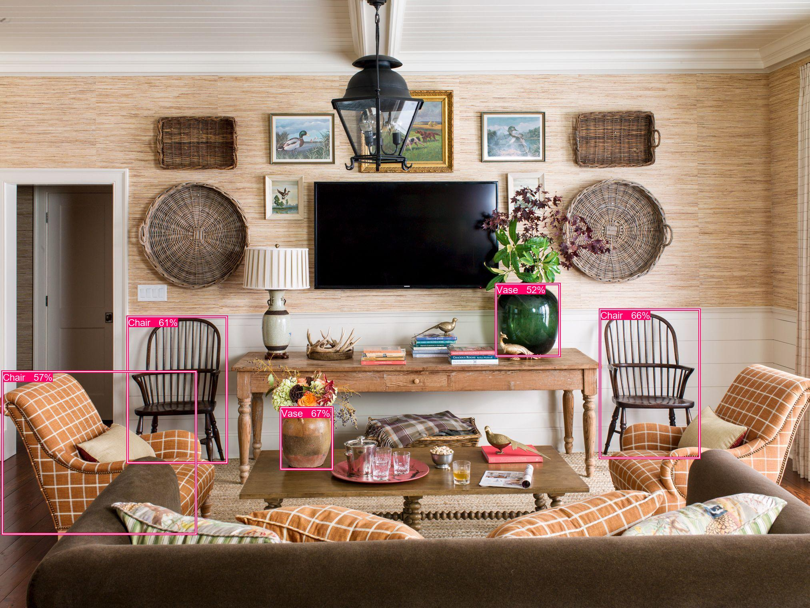
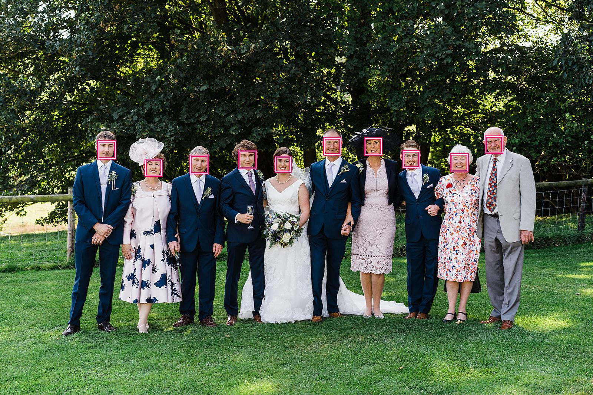

About¶
DLTK’s Computer Vision service includes advanced image processing algorithms which return required information from the given image. We also have third party APIs like IBM & Azure integrated.
Image Classification¶
Image Classification is a fundamental computer vision task which attempts to comprehend an entire image as a whole. It tries to classify an image into various classes the model is trained for.
This feature uses various open source models present which are included in OpenDLTK for classifying an image based on its visual content. Also other proprietary AI engines like Azure and IBM can also be used using same function, as shown in below code.
Supported Open Source Models
Model
Implementations
Classes
ResNet50
Supported Third Party Classifiers
Name
Documentation Link
Azure
IBM
client.image_classification(image_url=None, image_path=None, top_n=3, image_classifiers=['tensorflow'], output_types=["json"]):
- Parameters
image_url – Image URL
image_path – Local Image Path
top_n – get top n predictions
image_classifiers – Supported image classifier tensorflow, azure, ibm
output_types (list) – Type of output requested by client: “json”, “image”
- Return type
Image classification response
Example
- Setup DLTK
- Send Image to OpenDLTK for Image classification
- Check status of prediction
Input and output
 {"task_status": "SUCCESS", "task_id": "83efafb7-95ae-42cf-871d-58f7b21a37be", "output": {"tensorflow_predicted_classes": [{"class": "clumber", "confidence": "0.23649043"}, {"class": "otterhound", "confidence": "0.18737608"}, {"class": "Old_English_sheepdog", "confidence": "0.12396963"}, {"class": "Irish_wolfhound", "confidence": "0.10178323"}]}}
{"task_status": "SUCCESS", "task_id": "83efafb7-95ae-42cf-871d-58f7b21a37be", "output": {"tensorflow_predicted_classes": [{"class": "clumber", "confidence": "0.23649043"}, {"class": "otterhound", "confidence": "0.18737608"}, {"class": "Old_English_sheepdog", "confidence": "0.12396963"}, {"class": "Irish_wolfhound", "confidence": "0.10178323"}]}}
Object Detection¶
Object Detection identifies and locates objects in an image provided by user. This function uses open source deep learning pre-trained models provided under OpenDLTK, along with support for proprietary models by AI engines like Azure.
Object Detection can be used for various use-cases like Tracking objects, Counting people, Vehicle Detection, etc.
Supported Open Source Models
Model
Feature Extractor
Data Trained on
Single Shot Detector
ResNet50
Supported Object Detectors
Name
Documentation Link
Azure
client.object_detection(image_url=None, image_path=None,object_detectors=['tensorflow'], output_types=["json"]):
- Parameters
image_url – Image URL
image_path – Local Image Path
object_detectors – list of object detectors, Supported object detectors are [‘tensorflow’,’azure’]
output_types (list) – Type of output requested by client: “json”, “image” (base64 encoded image)
- Return type
A json object containing the output of object detection
Example
Initialize DLTK Client
import dltk_ai client = dltk_ai.DltkAiClient(api_key="apikey" ,base_url='http://localhost:8000')Send Request to OpenDLTK for processing
image_path = "./examples/data/image/object_detection_sample_2.jpg" img = Image.open(img_path) object_detection_response = client.object_detection(image_path=image_path, object_detectors=['azure', 'tensorflow']) print(object_detection_response)Check prediction status
object_detection_response = client.check_cv_job(object_detection_response['task_id']) print(object_detection_response)Expected Response
{"task_status": "SUCCESS", "task_id": "8b32db78-708d-49ff-83ad-71dedee5c1f5", "output": {"azure_detected_objects": [{"bbox": {"x1": 1249, "y1": 709, "x2": 1399, "y2": 890}, "object_name": "vase", "confidence": 0.657}, {"bbox": {"x1": 1190, "y1": 443, "x2": 1450, "y2": 854}, "object_name": "plant", "confidence": 0.776}, {"bbox": {"x1": 327, "y1": 820, "x2": 556, "y2": 1198}, "object_name": "chair", "confidence": 0.886}, {"bbox": {"x1": 1486, "y1": 771, "x2": 1737, "y2": 1162}, "object_name": "chair", "confidence": 0.843}, {"bbox": {"x1": 40, "y1": 948, "x2": 428, "y2": 1310}, "object_name": "chair", "confidence": 0.659}, {"bbox": {"x1": 1685, "y1": 910, "x2": 2013, "y2": 1260}, "object_name": "chair", "confidence": 0.74}], "tensorflow_detected_objects": [{"object_name": "vase", "confidence": 0.6711814403533936, "bbox": {"x1": 702, "y1": 1019, "x2": 830, "y2": 1172}}, {"object_name": "chair", "confidence": 0.6634005308151245, "bbox": {"x1": 1500, "y1": 774, "x2": 1748, "y2": 1144}}, {"object_name": "chair", "confidence": 0.6156675219535828, "bbox": {"x1": 319, "y1": 792, "x2": 566, "y2": 1156}}, {"object_name": "chair", "confidence": 0.5750893950462341, "bbox": {"x1": 6, "y1": 929, "x2": 489, "y2": 1334}}, {"object_name": "vase", "confidence": 0.5276069641113281, "bbox": {"x1": 1240, "y1": 710, "x2": 1398, "y2": 889}}]}}Visualize output
from dltk_ai.visualization import draw_bbox tensforflow_output = object_detection_response['output']['tensorflow_detected_objects'] bboxes = [object_['bbox'].values() for object_ in tensforflow_output] captions = [f'{object_["object_name"] } {int(object_["confidence"]*100)}%' for object_ in tensforflow_output] draw_bbox(img, bboxes, captions)Tip
Run in Jupyter Notebook for better visualization of response
{kind=link}
Face Detection¶
Face Detection is fundamental task for various use-cases like Face Recognition, Face Verification, Expression Analysis, etc.
This function uses open-source models for face detection, along with support for various proprietary AI engines like Azure
Supported Open Source Models
Model
Implementations
MTCNN
DLIB-HoG
OpenCV - DNN
Supported Third Party Classifiers
Name
Documentation Link
Azure
client.face_analytics(image_url=None, features=None, image_path=None, face_detectors=['mtcnn'], ,output_types=["json"]):
- Parameters
image_url – Image URL
features – Type of features requested by client. Presently supports “face_detection”.
image_path – Local Image Path
face_detectors – supported face detectors are (mtcnn, dlib, opencv, azure)
output_types (list) – Type of output requested by client: “json”, “image”
- Return type
A json object containing the output of object detection
Example
- Import necessary packages
- Send request to OpenDLTK for processing image
Ensure azure credentials were used while setting up OpenDLTK, else you can use
mtcnnExpected Output
{"task_status": "SUCCESS", "task_id": "30e2bddd-5468-49b0-9f49-d7fb74b6663b", "output": {"azure": {"json": {"face_locations": [{"x": 514, "y": 421, "w": 46, "h": 46}, {"x": 645, "y": 408, "w": 45, "h": 45}, {"x": 265, "y": 382, "w": 45, "h": 45}, {"x": 1217, "y": 417, "w": 44, "h": 44}, {"x": 985, "y": 374, "w": 43, "h": 43}, {"x": 1311, "y": 369, "w": 43, "h": 43}, {"x": 393, "y": 432, "w": 42, "h": 42}, {"x": 1088, "y": 409, "w": 42, "h": 42}, {"x": 875, "y": 374, "w": 42, "h": 42}, {"x": 744, "y": 424, "w": 39, "h": 39}]}}}}c. Visualize response
azure_bboxes = face_analytics_response['output']['azure']['json']['face_locations'] azure_bboxes = [box.values() for box in azure_bboxes] output_image = draw_bbox(img, azure_bboxes,coords_order='xywh') output_imageNote
Update
base_url="http://localhost:8000"with your base service IP address. and in caseauthenticationis enabled, please refer client SDK usage with authentication enabled section
{kind=link}